Analysing Neisseria gonorrhoeae genotype-phenotype data
Leonor Sánchez-Busó
2026-03-09
Source:vignettes/NeisseriaGonoExamples.Rmd
NeisseriaGonoExamples.RmdIntroduction
This vignette demonstrates three usage examples of
AMRgen functions to investigate associations between
genotype and phenotype data in Neisseria gonorrhoeae.
Specifically, we illustrate how to:
Importing AMR genotype data from AMRFinderPlus.
Import and format antimicrobial susceptibility testing (AST) phenotypic data in the form of minimum inhibitory concentrations (MICs) from a table.
Explore the distribution of phenotypes across observed combinations of genetic AMR markers.
Investigate the statistical association of individual (solo) markers and marker combinations with phenotype data.
Work with MIC data from antibiotics with available EUCAST clinical breakpoints and/or epidemiological cut-offs (ECOFF).
Evaluate the concordance of phenotypes with observed AMR markers and predict resistance based on this concordance.
Load the necessary libraries before running this vignette:
Use case 1: Investigation of genotype-phenotype AMR data from Euro-GASP genomic surveys
Data preparation
For this example, we have collated whole-genome sequencing data from three European Gonococcal Antimicrobial Surveillance Programme (Euro-GASP) genomic surveys. Raw FASTQ data was downloaded from the European Nucleotide Archive (ENA).
- Euro-GASP 2013, by Harris et
al. (2018).
- ENA PRJEB9227, n=1,054 genomes.
- Euro-GASP 2018, by Sánchez-Busó et
al. (2022).
- ENA PRJEB34068, n=2,375 genomes.
- Euro-GASP 2020, by Golparian et
al. (2024).
- ENA PRJEB58139, n=1,932 genomes.
Assemblies were generated with SPAdes v3.15.5
(--careful mode) and assessed with Quast v5.1.
Further details on the quality control and assembly pipeline used for
this data are described in Sánchez-Serrano et
al. (2026).
Phenotypic MIC data were obtained from the respective publications
and collated into a single table (one row per isolate, one column per
antibiotic). This pre-loaded object eurogasp_pheno_raw
serves as the phenotype input for
AMRgen:
head(eurogasp_pheno_raw)
#> # A tibble: 6 × 5
#> id Azithromycin Ciprofloxacin Cefixime Ceftriaxone
#> <chr> <dbl> <dbl> <chr> <dbl>
#> 1 ERR1549755 0.19 8 0.064 0.032
#> 2 ERR1549756 0.25 0.008 0.047 0.023
#> 3 ERR1549757 0.125 32 0.016 0.006
#> 4 ERR1549758 0.38 0.003 0.016 0.003
#> 5 ERR1549759 0.5 0.002 0.016 0.004
#> 6 ERR1471130 NA NA 0.016 0.012The dataset (total n = 5,361) includes MIC data for:
- Azithromycin (n=5,055 isolates)
- Ciprofloxacin (n=5,360 isolates)
- Cefixime (n=5,361 isolates)
- Ceftriaxone (n=5,361 isolates)
Identification of genetic AMR determinants using
AMRfinderplus
AMRfinderplus v4.0.23
(database version 2025-03-25.1) was run on all assemblies using the
following command:
amrfinder --threads 4 --print_node -O Neisseria_gonorrhoeae --name ${IN%.fasta} -n $IN -o ${IN%.fasta}_amrfp.tsv \
--database /path/to/AMRFinderPlus/databases/4.0/2025-03-25.1Note: The
--print_nodeflag must be enabled to include gene hierarchy node names in the output.
All per-sample output files were concatenated into a single table:
This concatenated table is pre-loaded as
eurogasp_geno_raw, the genotype input for
AMRgen.
Importing genotype and phenotype data into
AMRgen
Use import_amrfp() to parse the AMRfinderplus
output:
eurogasp_geno <- import_amrfp(
input_table = eurogasp_geno_raw,
sample_col = "Name"
)For the phenotype file, reshape from wide to long format using
pivot_longer(). MIC values across antibiotics may be stored
as different types (numeric vs. character) due to inequality prefixes
such as <0.016 or >32. We coerce all
antibiotic columns to character before pivoting to avoid type conflicts
while preserving this information for downstream processing by
format_ast():
eurogasp_pheno <- eurogasp_pheno_raw %>%
mutate(across(c(Azithromycin, Ciprofloxacin, Cefixime, Ceftriaxone), as.character)) %>%
pivot_longer(
cols = c(Azithromycin, Ciprofloxacin, Cefixime, Ceftriaxone),
names_to = "antibiotic",
values_to = "mic"
)Then format with format_ast(). Setting
interpret_eucast = TRUE and
interpret_ecoff = TRUE adds categorical SIR interpretations
(clinical breakpoints) and WT/NWT classifications (ECOFF) fron
EUCAST:
eurogasp_ast <- format_ast(
input = eurogasp_pheno,
sample_col = "id",
species = "Neisseria gonorrhoeae",
ab_col = "antibiotic",
mic_col = "mic",
interpret_eucast = TRUE,
interpret_ecoff = TRUE
)
#> Adding new micro-organism column 'spp_pheno' (class 'mo') with constant value Neisseria gonorrhoeae
#> Parsing column spp_pheno as micro-organism (class 'mo')
#> Parsing column antibiotic as antibiotic (class 'ab')
#> Renaming column antibiotic to standard name 'drug_agent'
#> Parsing column mic as class 'mic'
#> Could not find disk_col disk in input table
#> Could not find pheno_col ecoff in input table
#> Could not find pheno_col pheno_eucast in input table
#> Could not find pheno_col pheno_clsi in input table
#> Could not find pheno_col pheno_provided in input table
#> Could not find method_col method in input table
#> Could not find platform_col platform in input table
#> Could not find guideline_col guideline in input table
#> Could not find source_col source in input table
#> Interpreting all data as species: Neisseria gonorrhoeaeImportantly, out of the 5,361 strains under study and with phenotype data, genetic determinants of AMR were found for 5,186 by AMRfinderplus. Negative samples should be added to the genotype table so they are properly accounted for in downstream analyses:
Exploring phenotype distributions and comparing with EUCAST reference data
Round MIC values to the nearest doubling dilution using
as.mic() with round_to_next_log2 = TRUE:
eurogasp_double <- eurogasp_ast %>%
mutate(across(all_of("mic"), ~ AMR::as.mic(.x, round_to_next_log2 = TRUE)))For each antibiotic, we visualise the MIC distribution with
assay_by_var() and compare it to the EUCAST reference
distribution using compare_mic_with_eucast().
Azithromycin
# Plot the distribution of MIC data in the study
assay_by_var(
pheno_table = eurogasp_double,
antibiotic = "Azithromycin",
measure = "mic",
colour_by = "ecoff",
species = "Neisseria gonorrhoeae"
)
#> Error in executing command: Could not determine MIC breakpoints using AMR package, please provide your own breakpoints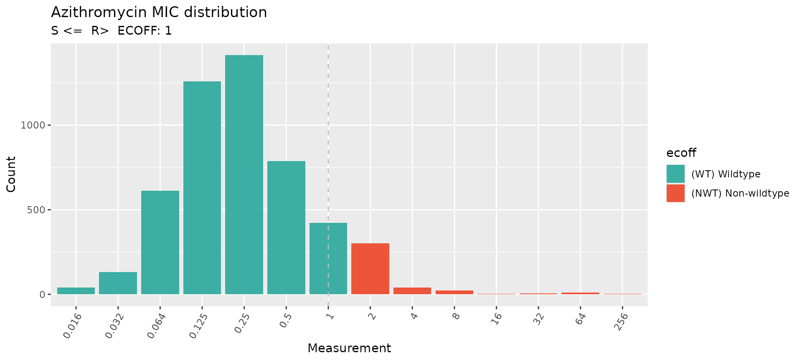
# Extract MIC data from the pheno table
azm_data <- eurogasp_double %>%
filter(drug_agent == "AZM") %>%
pull(mic)
# Compare with a reference distribution from EUCAST
azm_comparison <- compare_mic_with_eucast(
mics = azm_data,
ab = "Azithromycin",
mo = "Neisseria gonorrhoeae"
)
# automated plot comparing to reference distribution
autoplot(azm_comparison)
# Convert the output table into long format
azm_comp_melt <- azm_comparison %>%
pivot_longer(
cols = c(user, eucast),
names_to = "variable",
values_to = "nb"
)
# Plot the distributions with ggplot2
ggplot(azm_comp_melt, aes(x = value, y = nb, fill = variable)) +
geom_bar(stat = "identity", position = "dodge") +
xlab("Minimum inhibitory concentration (MIC)") +
ylab("Number of isolates") +
ggtitle("Azithromycin MIC distribution vs EUCAST reference data") +
theme(axis.text.x = element_text(angle = 45, hjust = 1))Ciprofloxacin
# Plot the distribution of MIC data in the study
# The breakpoint for R is 0.06 but cannot be represented directly as it is not a doubling dilution (values in x axis).
assay_by_var(
pheno_table = eurogasp_double,
antibiotic = "Ciprofloxacin",
measure = "mic",
colour_by = "pheno_eucast",
species = "Neisseria gonorrhoeae"
)
#> MIC breakpoints determined using AMR package: S <= 0.032 and R > 0.06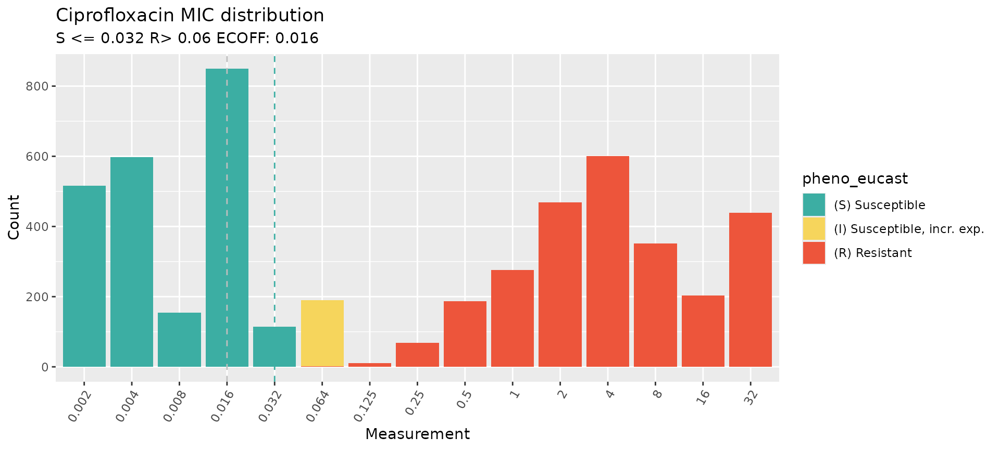
# If the AST data without doublig dilutions is represented, then both breakpoints can be plotted.
assay_by_var(
pheno_table = eurogasp_ast,
antibiotic = "Ciprofloxacin",
measure = "mic",
colour_by = "pheno_eucast",
species = "Neisseria gonorrhoeae"
)
#> MIC breakpoints determined using AMR package: S <= 0.032 and R > 0.06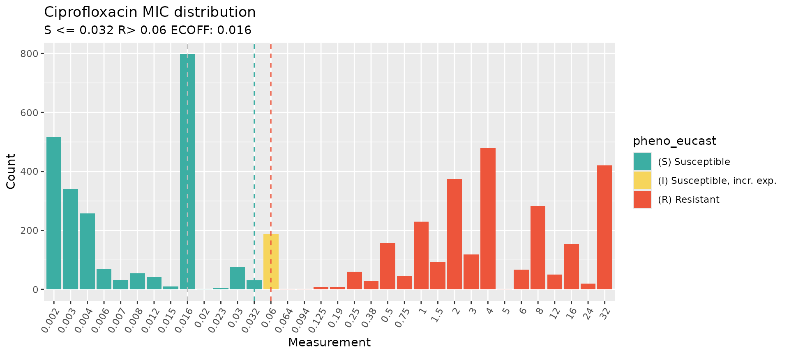
# Extract MIC data from the pheno table
cip_data <- eurogasp_double %>%
filter(drug_agent == "CIP") %>%
pull(mic)
# Compare with a reference distribution from EUCAST
cip_comparison <- compare_mic_with_eucast(
mics = cip_data,
ab = "Ciprofloxacin",
mo = "N. gonorrhoeae"
)
# plot the data with the reference distribution
autoplot(cip_comparison)
# Convert the output table into long format
cip_comp_melt <- cip_comparison %>%
pivot_longer(
cols = c(user, eucast),
names_to = "variable",
values_to = "nb"
)
# Plot the distributions with ggplot2
ggplot(cip_comp_melt, aes(x = value, y = nb, fill = variable)) +
geom_bar(stat = "identity", position = "dodge") +
xlab("Minimum inhibitory concentration (MIC)") +
ylab("Number of isolates") +
ggtitle("Ciprofloxacin MIC distribution vs EUCAST reference data") +
theme(axis.text.x = element_text(angle = 45, hjust = 1))Ceftriaxone
# Plot the distribution of MIC data in the study
assay_by_var(
pheno_table = eurogasp_double,
antibiotic = "Ceftriaxone",
measure = "mic",
colour_by = "pheno_eucast",
species = "Neisseria gonorrhoeae"
)
#> MIC breakpoints determined using AMR package: S <= 0.125 and R > 0.125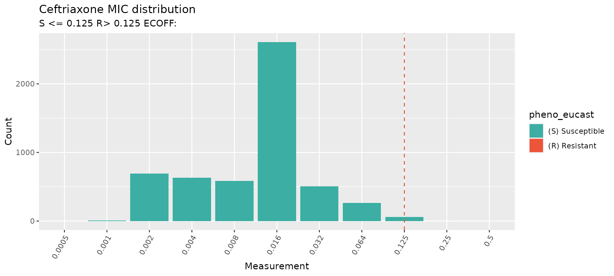
# Extract MIC data from the pheno table
cro_data <- eurogasp_double %>%
filter(drug_agent == "CRO") %>%
pull(mic)
# Compare with a reference distribution from EUCAST
cro_comparison <- compare_mic_with_eucast(
mics = cro_data,
ab = "Ceftriaxone",
mo = "N. gonorrhoeae"
)
autoplot(cro_comparison)
# Convert the output table into long format
cro_comp_melt <- cro_comparison %>%
pivot_longer(
cols = c(user, eucast),
names_to = "variable",
values_to = "nb"
)
ggplot(cro_comp_melt, aes(x = value, y = nb, fill = variable)) +
geom_bar(stat = "identity", position = "dodge") +
xlab("Minimum inhibitory concentration (MIC)") +
ylab("Number of isolates") +
ggtitle("Ceftriaxone MIC distribution vs EUCAST reference data") +
theme(axis.text.x = element_text(angle = 45, hjust = 1))Cefixime
# Plot the distribution of MIC data in the study
assay_by_var(
pheno_table = eurogasp_double,
antibiotic = "Cefixime",
measure = "mic",
colour_by = "pheno_eucast",
species = "Neisseria gonorrhoeae"
)
#> MIC breakpoints determined using AMR package: S <= 0.125 and R > 0.125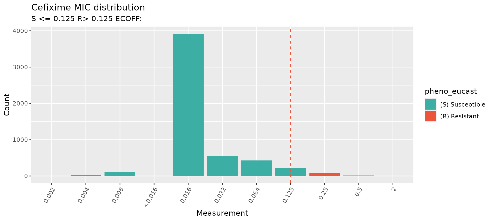
# Extract MIC data from the pheno table
cfm_data <- eurogasp_double %>%
filter(drug_agent == "CFM") %>%
pull(mic)
# Compare with a reference distribution from EUCAST
cfm_comparison <- compare_mic_with_eucast(
mics = cfm_data,
ab = "Cefixime",
mo = "N. gonorrhoeae"
)
autoplot(cfm_comparison)
# Convert the output table into long format and plot using ggplot2
cfm_comp_melt <- cfm_comparison %>%
pivot_longer(
cols = c(user, eucast),
names_to = "variable",
values_to = "nb"
)
ggplot(cfm_comp_melt, aes(x = value, y = nb, fill = variable)) +
geom_bar(stat = "identity", position = "dodge") +
xlab("Minimum inhibitory concentration (MIC)") +
ylab("Number of isolates") +
ggtitle("Cefixime MIC distribution vs EUCAST reference data") +
theme(axis.text.x = element_text(angle = 45, hjust = 1))Analysing azithromycin genotype-phenotype data
Azithromycin was historically used in dual therapy for gonorrhoea but has been replaced in many countries by ceftriaxone monotherapy due to the expansion of resistant lineages. No EUCAST clinical breakpoint exists for azithromycin in N. gonorrhoeae; we therefore use the epidemiological cut-off (ECOFF > 1 mg/L).
Build the binary matrix combining genotype and phenotype:
azm_bin <- get_binary_matrix(
geno_table = eurogasp_geno,
pheno_table = eurogasp_ast,
antibiotic = "Azithromycin",
drug_class_list = c("Macrolides", "Lincosamides"),
ecoff_col = "ecoff",
sir_col = "pheno_eucast",
keep_assay_values = TRUE,
keep_assay_values_from = "mic"
)
#> Defining NWT in binary matrix using ecoff column provided: ecoffExplore the distribution of MIC values across observed marker
combinations with amr_upset():
# Calculate upset plots of MIC distributions vs genotype marker combinations
azi_upset <- amr_upset(
binary_matrix = azm_bin,
assay = "mic",
min_set_size = 2,
order = "value",
species = "Neisseria gonorrhoeae"
)
#> Warning: no values in pheno column, colouring upset plot by ecoff column
#> Removing 306 rows with no phenotype call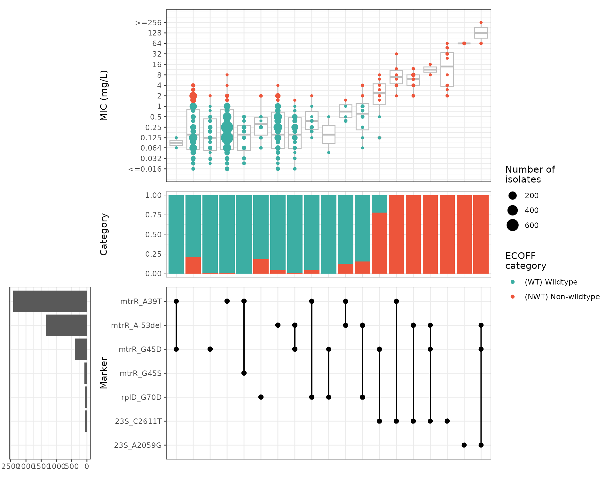
Evaluate the positive predictive value (PPV) of solo markers (i.e. markers occurring in the absence of any other known AMR determinant):
azm_solo_ppv <- solo_ppv_analysis(
binary_matrix = azm_bin,
antibiotic = "Azithromycin",
reverse_order = FALSE
)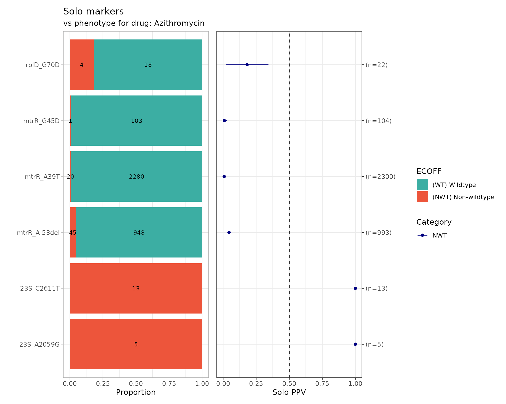
Only known mutations in the 23S rDNA gene are associated with MIC increases sufficient to reach the NWT category (ECOFF > 1 mg/L). Mutations in the mtrR gene or its promoter, or the rplD G70D mutation alone, do not. PPV > 0.50 indicates that more than 50% of isolates carrying a given marker fall in the NWT category..
Now evaluate PPVs for marker combinations with
ppv():
azm_ppv <- ppv(
binary_matrix = azm_bin,
order = "value",
min_set_size = 2,
antibiotic = "Azithromycin",
upset_grid = TRUE,
plot_assay = TRUE,
assay = "mic"
)
#> Warning: no values in pheno column, colouring upset plot by ecoff column
#> Removing 306 rows with no phenotype call
#> Scale for y is already present.
#> Adding another scale for y, which will replace the existing scale.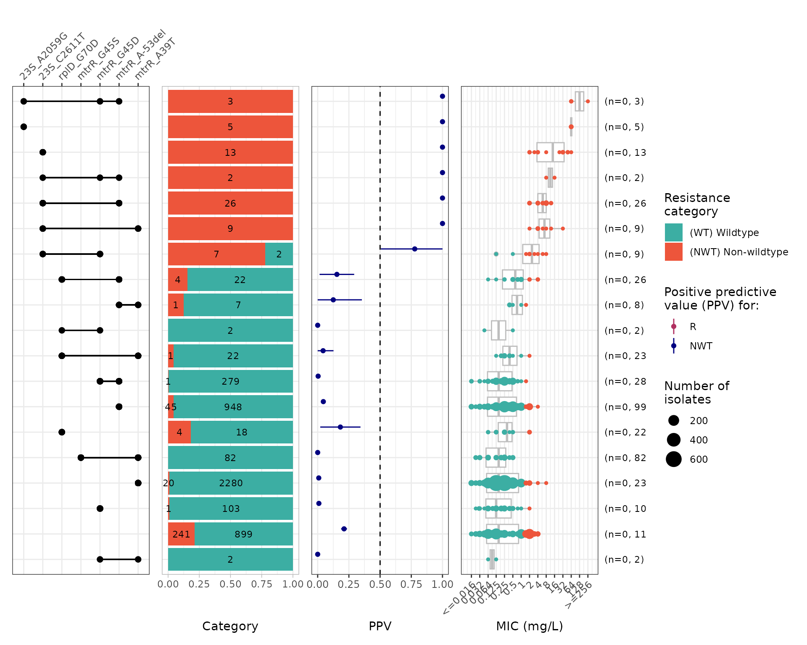
Combinations including 23S rDNA mutations are the only ones with PPV > 0.5. No combination of mtrR with or without rplD mutations alone raises MIC above the NWT threshold.
Run a Firth’s bias-reduced penalised-likelihood logistic regression
with amr_logistic(), including markers with a minimum
allele frequency (MAF) of ≥ 10 isolates:
azm_logist <- amr_logistic(
binary_matrix = azm_bin,
antibiotic = "Azithromycin",
ecoff_col = "ecoff",
maf = 10,
single_plot = TRUE
)
#> ...Fitting logistic regression model to R using logistf
#> ...Fitting logistic regression model to NWT using logistf
#> Filtered data contains 5055 samples (386 => 1, 4669 => 0) and 7 variables.
#> Generating plots
#> Plotting NWT model only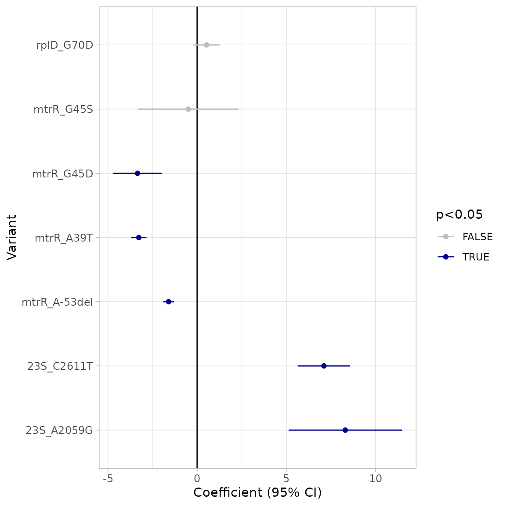
The regression confirms that mtrR G45D, A39T, and A-53del do not contribute to increased azithromycin MICs, while 23S rDNA mutations do.
Calculate concordance and resistance prediction metrics using results
from the logistic regression. The results of the
solo_ppv_analisis() or ppv() functions can be
provided to the ppv_results parameter.
azm_concordance <- concordance(
binary_matrix = azm_bin,
ppv_results = azm_solo_ppv,
prediction_rule = "logistic",
logreg_results = azm_logist
)
azm_concordance
#> AMR Genotype-Phenotype Concordance
#> Prediction rule: logistic
#>
#> --- Outcome: NWT ---
#> Samples: 5055 | Markers: 10
#> Markers used: mtrR_A39T, mtrR_A-53del, mtrR_G45D, 23S_A2059G, mtrR_G45S, rplD_G70D, erm(B), 23S_C2611T, mtrR_G-131A, mtrC_C-120T
#>
#> Confusion Matrix:
#> Truth
#> Prediction 1 0
#> 1 68 2
#> 0 318 4667
#>
#> Metrics:
#> Sensitivity : 0.1762
#> Specificity : 0.9996
#> PPV : 0.9714
#> NPV : 0.9362
#> Accuracy : 0.9367
#> Kappa : 0.2814
#> F-measure : 0.2982
#> VME : 0.8238
#> ME : 4e-04The current marker set yields only 17.62% sensitivity (i.e. only 17.62% of resistant isolates are correctly identified), with a very major error (VME) of 82.34%. This indicates that the majority of NWT isolates are not explained by the markers currently available in AMRFinderPlus. Notably, mosaic variants in the mtrCDE efflux pump genes — not yet fully characterised and represented in AMR databases — are likely contributing to this discrepancy. Two MtrD mutations associated with decreased azithromycin susceptibility (Ma et al., 2020) have not yet been incorporated into AMRFinderPlus.
Visualise the prediction on the MIC distribution:
eurogasp_azm_pred <- eurogasp_ast %>%
left_join(azm_concordance$data[, c("id", "NWT_pred")], by = "id")
head(eurogasp_azm_pred)
#> # A tibble: 6 × 7
#> id drug_agent mic ecoff pheno_eucast spp_pheno NWT_pred
#> <chr> <ab> <mic> <sir> <sir> <mo> <int>
#> 1 ERR1549755 AZM 0.190 WT NA B_NESSR_GNRR 0
#> 2 ERR1549755 CIP 8.000 NWT R B_NESSR_GNRR 0
#> 3 ERR1549755 CFM 0.064 NA S B_NESSR_GNRR 0
#> 4 ERR1549755 CRO 0.032 NA S B_NESSR_GNRR 0
#> 5 ERR1549756 AZM 0.250 WT NA B_NESSR_GNRR 0
#> 6 ERR1549756 CIP 0.008 WT S B_NESSR_GNRR 0
assay_by_var(
pheno_table = eurogasp_azm_pred,
antibiotic = "Azithromycin",
measure = "mic",
colour_by = "NWT_pred",
species = "Neisseria gonorrhoeae",
bar_cols = c("#3CAEA3", "#ED553B"),
colour_legend_label = "NWT prediction"
)
#> Error in executing command: Could not determine MIC breakpoints using AMR package, please provide your own breakpoints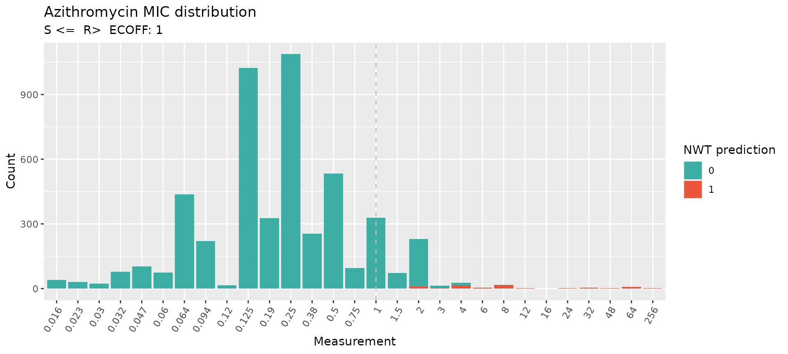
Many isolates with MICs above the ECOFF (1–4 mg/L) are predicted as WT, consistent with uncharacterised efflux pump variants.
Analysing ciprofloxacin genotype-phenotype data
Ciprofloxacin resistance is widespread in N. gonorrhoeae and is strongly associated with known genetic determinants — primarily mutations in the gyrA and parC genes. Build the binary matrix and generate upset plots:
# Get binary matrix
cip_bin <- get_binary_matrix(
geno_table = eurogasp_geno,
pheno_table = eurogasp_ast,
antibiotic = "Ciprofloxacin",
drug_class_list = "Quinolones",
sir_col = "pheno_eucast",
keep_assay_values = TRUE,
keep_assay_values_from = "mic"
)
#> Defining NWT in binary matrix using ecoff column provided: ecoff
# Calculate upset plots of MIC distributions vs genotype marker combinations
cip_upset <- amr_upset(
binary_matrix = cip_bin,
min_set_size = 1,
order = "value",
assay = "mic",
antibiotic = "Ciprofloxacin",
species = "Neisseria gonorrhoeae"
)
#> Removing 336 rows with no phenotype call
#> MIC breakpoints determined using AMR package: S <= 0.032 and R > 0.06
#> MIC breakpoints determined using AMR package: S <= 0.032 and R > 0.06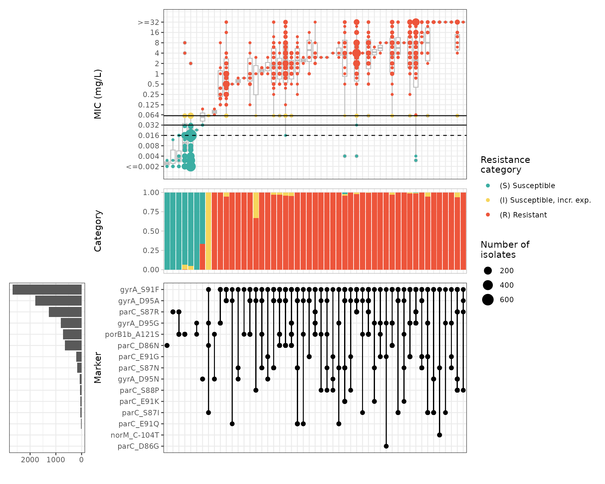
The upset plot shows that most isolates with an MIC above the EUCAST clinical breakpoint (R) carry the gyrA S91F mutation, the principal driver of ciprofloxacin resistance. Horizontal black lines in the top panel indicate clinical breakpoints; the dashed line represents the ECOFF.
Only four markers appear in isolation; evaluate their solo PPVs:
cip_solo_ppv <- solo_ppv_analysis(
binary_matrix = cip_bin,
antibiotic = "Ciprofloxacin",
reverse_order = FALSE
)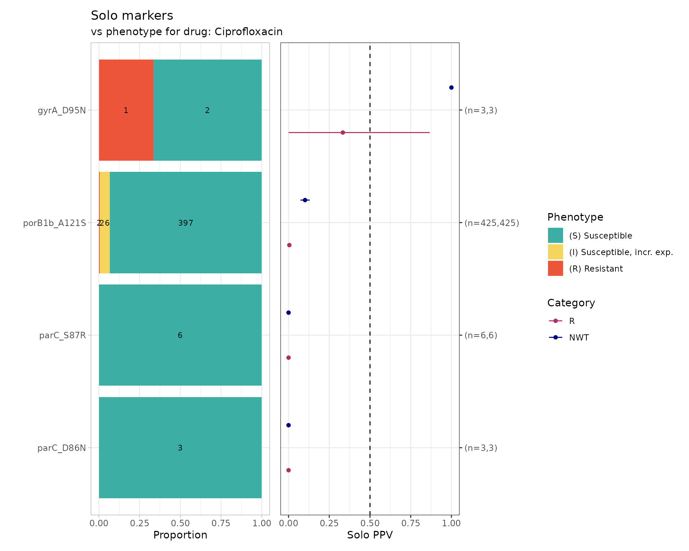
Evaluate PPVs for marker combinations:
cip_ppv <- ppv(
binary_matrix = cip_bin,
order = "value",
min_set_size = 2,
antibiotic = "Ciprofloxacin",
upset_grid = TRUE,
plot_assay = TRUE,
assay = "mic"
)
#> Removing 336 rows with no phenotype call
#> Scale for y is already present.
#> Adding another scale for y, which will replace the existing scale.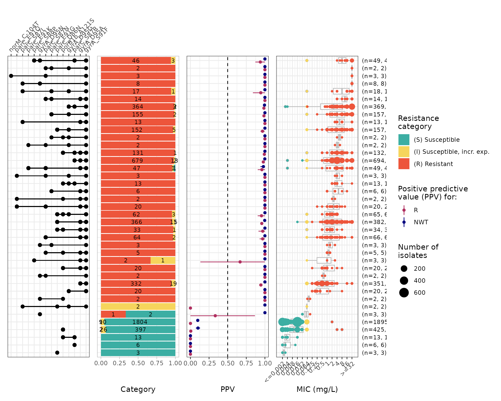
Run logistic regression to assess the individual contribution of each marker:
cip_logist <- amr_logistic(
binary_matrix = cip_bin,
antibiotic = "Ciprofloxacin",
sir_col = "pheno_eucast",
ecoff_col = "ecoff",
maf = 10,
single_plot = TRUE
)
#> ...Fitting logistic regression model to R using logistf
#> Filtered data contains 5025 samples (2605 => 1, 2420 => 0) and 13 variables.
#> ...Fitting logistic regression model to NWT using logistf
#> Filtered data contains 5025 samples (2907 => 1, 2118 => 0) and 13 variables.
#> Generating plots
#> Plotting 2 models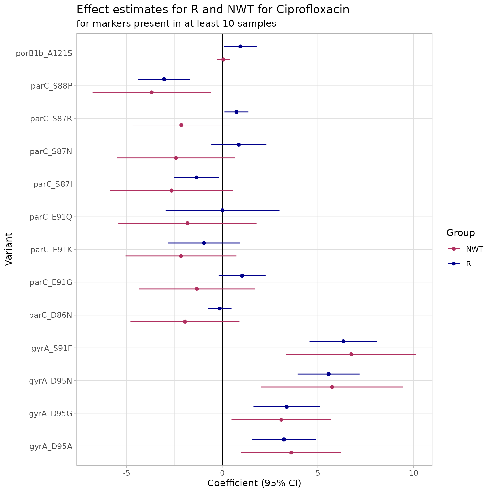
Calculate concordance metrics using the results from the logistic regression:
cip_concordance <- concordance(
binary_matrix = cip_bin,
ppv_results = cip_solo_ppv,
prediction_rule = "logistic",
logreg_results = cip_logist
)
cip_concordance
#> AMR Genotype-Phenotype Concordance
#> Prediction rule: logistic
#>
#> --- Outcome: R ---
#> Samples: 5025 | Markers: 15
#> Markers used: porB1b_A121S, gyrA_D95A, gyrA_S91F, parC_S87R, parC_D86N, gyrA_D95G, parC_E91G, parC_E91Q, parC_S87N, norM_C-104T, parC_E91K, gyrA_D95N, parC_S87I, parC_S88P, parC_D86G
#>
#> Confusion Matrix:
#> Truth
#> Prediction 1 0
#> 1 2601 78
#> 0 4 2342
#>
#> Metrics:
#> Sensitivity : 0.9985
#> Specificity : 0.9678
#> PPV : 0.9709
#> NPV : 0.9983
#> Accuracy : 0.9837
#> Kappa : 0.9673
#> F-measure : 0.9845
#> VME : 0.0015
#> ME : 0.0322
#>
#> --- Outcome: NWT ---
#> Samples: 5025 | Markers: 15
#> Markers used: porB1b_A121S, gyrA_D95A, gyrA_S91F, parC_S87R, parC_D86N, gyrA_D95G, parC_E91G, parC_E91Q, parC_S87N, norM_C-104T, parC_E91K, gyrA_D95N, parC_S87I, parC_S88P, parC_D86G
#>
#> Confusion Matrix:
#> Truth
#> Prediction 1 0
#> 1 2678 5
#> 0 229 2113
#>
#> Metrics:
#> Sensitivity : 0.9212
#> Specificity : 0.9976
#> PPV : 0.9981
#> NPV : 0.9022
#> Accuracy : 0.9534
#> Kappa : 0.9059
#> F-measure : 0.9581
#> VME : 0.0788
#> ME : 0.0024Using
Ras outcome, we get a 99.85% sensitivity, 96.55% specificity and a PPV of 97.09% using all markers, with a major error (ME, a susceptible isolate is reported as resistant) of 3.45% and a very major error (VME, a resistant isolate is reported as susceptible) of ~0%.Using
NWTas outcome, we get a 92.34% sensitivity, 99.75% specificity and a PPV of 99.81%, with a ME of ~0% but a VME of 7.67%.
The results from the concordance analysis contain a prediction of
R/NWT based on the genotype-phenotype comparison under
$data in the generated object cip_concordance.
Extract these prediction columns, named R_pred and/or
NWT_pred, and incorporate them into the
eurogasp_ast object, which contains the MIC distribution
for this antibiotic:
eurogasp_cip_pred <- eurogasp_ast %>%
left_join(cip_concordance$data[, c("id", "R_pred", "NWT_pred")],
by = "id"
)
head(eurogasp_cip_pred)
#> # A tibble: 6 × 8
#> id drug_agent mic ecoff pheno_eucast spp_pheno R_pred NWT_pred
#> <chr> <ab> <mic> <sir> <sir> <mo> <int> <int>
#> 1 ERR1549755 AZM 0.190 WT NA B_NESSR_GNRR 1 1
#> 2 ERR1549755 CIP 8.000 NWT R B_NESSR_GNRR 1 1
#> 3 ERR1549755 CFM 0.064 NA S B_NESSR_GNRR 1 1
#> 4 ERR1549755 CRO 0.032 NA S B_NESSR_GNRR 1 1
#> 5 ERR1549756 AZM 0.250 WT NA B_NESSR_GNRR 0 0
#> 6 ERR1549756 CIP 0.008 WT S B_NESSR_GNRR 0 0Visualise the distribution of ciprofloxacin MICs by the R/NWT predictions:
assay_by_var(
pheno_table = eurogasp_cip_pred,
antibiotic = "Ciprofloxacin",
measure = "mic",
colour_by = "R_pred",
species = "Neisseria gonorrhoeae",
bar_cols = c("#3CAEA3", "#ED553B"),
colour_legend_label = "R prediction"
)
#> MIC breakpoints determined using AMR package: S <= 0.032 and R > 0.06
assay_by_var(
pheno_table = eurogasp_cip_pred,
antibiotic = "Ciprofloxacin",
measure = "mic",
colour_by = "NWT_pred",
species = "Neisseria gonorrhoeae",
bar_cols = c("#3CAEA3", "#ED553B"),
colour_legend_label = "NWT prediction"
)
#> MIC breakpoints determined using AMR package: S <= 0.032 and R > 0.06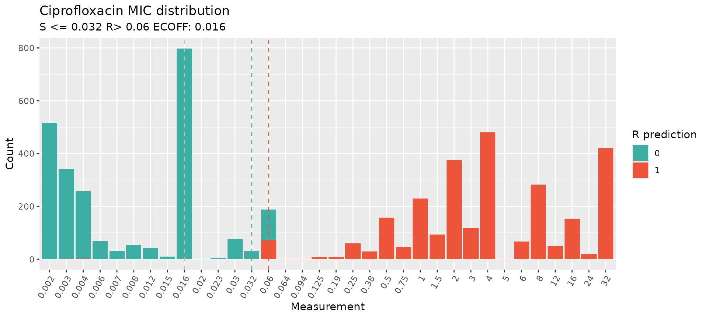
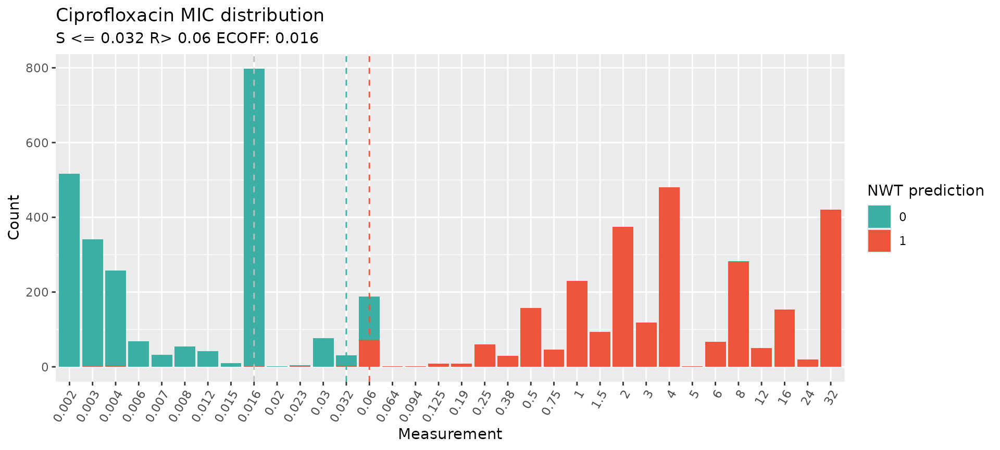
Results demonstrate a very strong genotype-based prediction of ciprofloxacin resistance/susceptibility using the currently available AMR markers.
Analysing extended-spectrum cephalosporin genotype-phenotype data
Euro-GASP provides MIC data for both ceftriaxone (first-line monotherapy for gonorrhoea) and cefixime (historically used but largely discarded due to expansion of penA mosaics generated through homologous recombination with other Neisseria species).
Build binary matrices for each antibiotic:
cfm_bin <- get_binary_matrix(
geno_table = eurogasp_geno,
pheno_table = eurogasp_ast,
antibiotic = "Cefixime",
drug_class_list = "Cephalosporins (3rd gen.)",
sir_col = "pheno_eucast",
ecoff_col = "ecoff",
keep_assay_values = TRUE,
keep_assay_values_from = "mic"
)
#> Defining NWT in binary matrix using ecoff column provided: ecoff
cro_bin <- get_binary_matrix(
geno_table = eurogasp_geno,
pheno_table = eurogasp_ast,
antibiotic = "Ceftriaxone",
drug_class_list = "Cephalosporins (3rd gen.)",
sir_col = "pheno_eucast",
ecoff_col = "ecoff",
keep_assay_values = TRUE,
keep_assay_values_from = "mic"
)
#> Defining NWT in binary matrix using ecoff column provided: ecoffGenerate upset plots:
cfm_upset <- amr_upset(
binary_matrix = cfm_bin,
min_set_size = 1,
order = "value",
assay = "mic",
antibiotic = "Cefixime",
species = "Neisseria gonorrhoeae"
)
#> MIC breakpoints determined using AMR package: S <= 0.125 and R > 0.125
#> MIC breakpoints determined using AMR package: S <= 0.125 and R > 0.125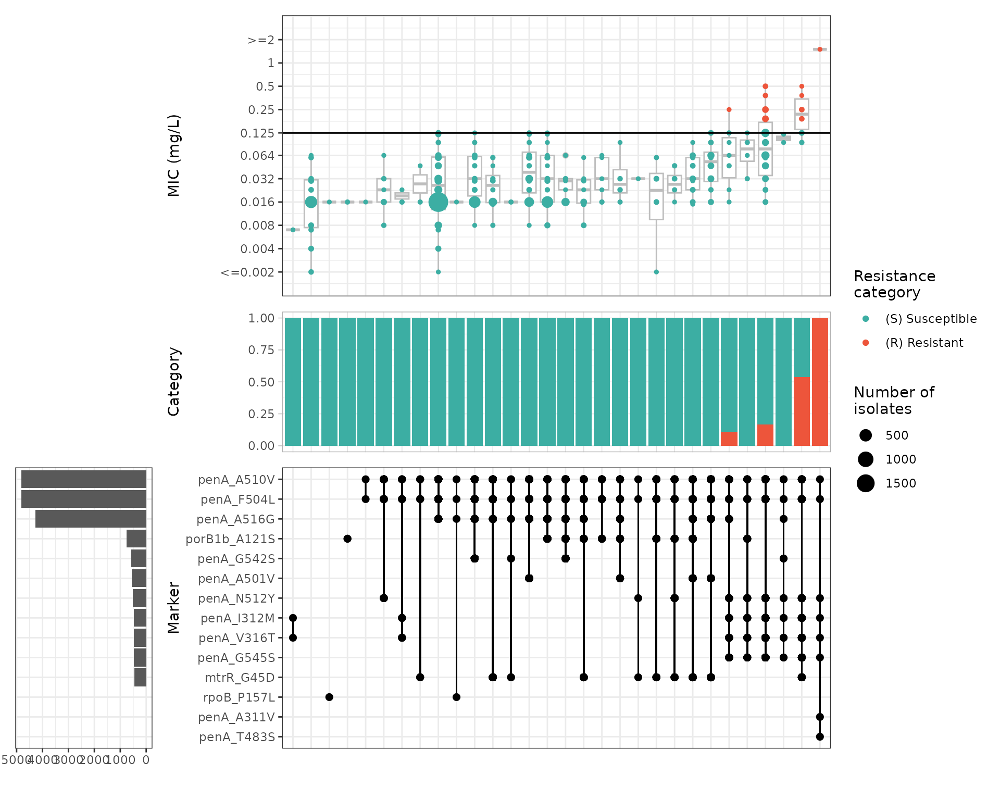
cro_upset <- amr_upset(
binary_matrix = cro_bin,
min_set_size = 1,
order = "value",
assay = "mic",
antibiotic = "Ceftriaxone",
species = "Neisseria gonorrhoeae"
)
#> MIC breakpoints determined using AMR package: S <= 0.125 and R > 0.125
#> MIC breakpoints determined using AMR package: S <= 0.125 and R > 0.125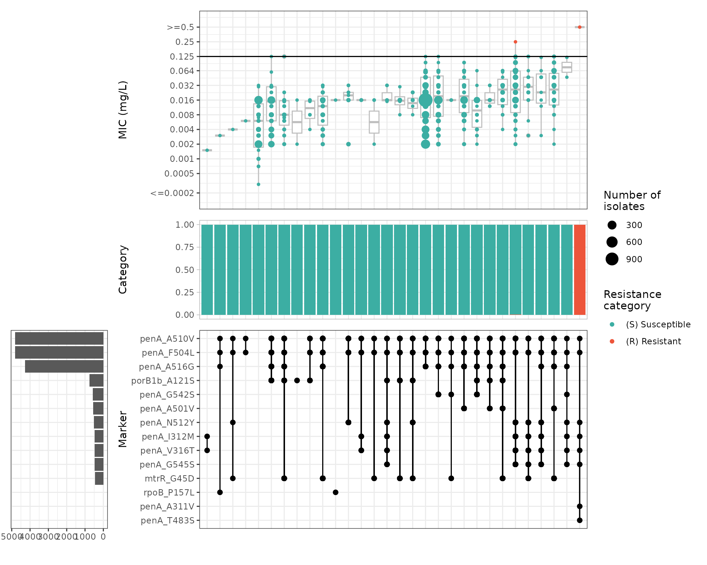
Several mutations in penA are associated with increased MICs, however only particular combinations of mutations lead to MICs above the resistant breakpoint. This is very characteristic of penA mosaics generated through homologous recombination with other Neisseria species. Importantly, not all mosaics increase the MIC above the clinical breakpoint, resulting in a wide MIC range within the susceptible category.
Because most known cephalosporin resistance mutations appear in combination, solo marker analysis provides limited information in this case:
cfm_solo_ppv <- solo_ppv_analysis(
binary_matrix = cfm_bin,
antibiotic = "Cefixime",
drug_class_list = "Cephalosporins (3rd gen.)",
sir_col = "pheno_eucast"
)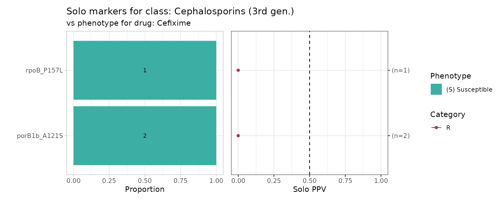
cro_solo_ppv <- solo_ppv_analysis(
binary_matrix = cro_bin,
antibiotic = "Ceftriaxone",
drug_class_list = "Cephalosporins (3rd gen.)",
sir_col = "pheno_eucast"
)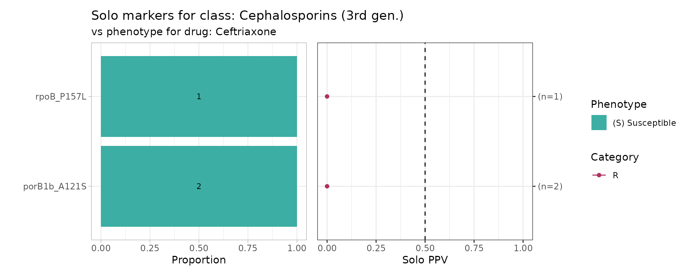
Instead, combination PPVs are a more informative metric:
cfm_ppv <- ppv(
binary_matrix = cfm_bin,
min_set_size = 2,
order = "ppv",
upset_grid = TRUE,
plot_assay = TRUE,
assay = "mic"
)
#> Scale for y is already present.
#> Adding another scale for y, which will replace the existing scale.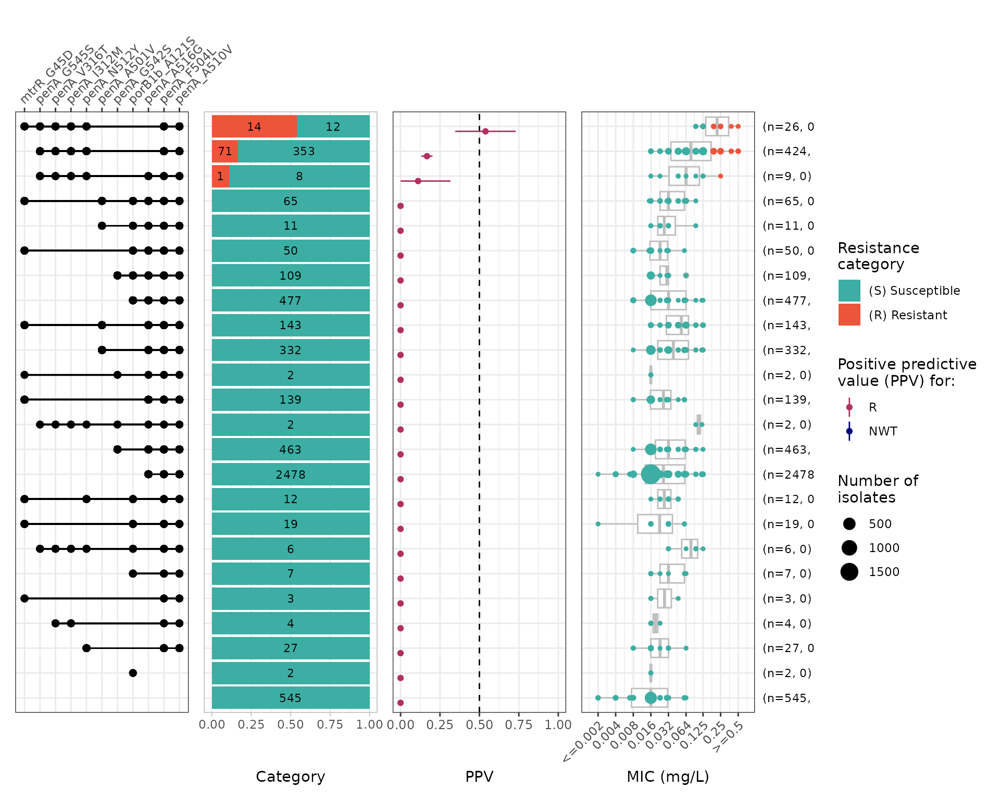
cro_ppv <- ppv(
binary_matrix = cro_bin,
min_set_size = 1,
order = "ppv",
upset_grid = TRUE,
plot_assay = TRUE,
assay = "mic"
)
#> Scale for y is already present.
#> Adding another scale for y, which will replace the existing scale.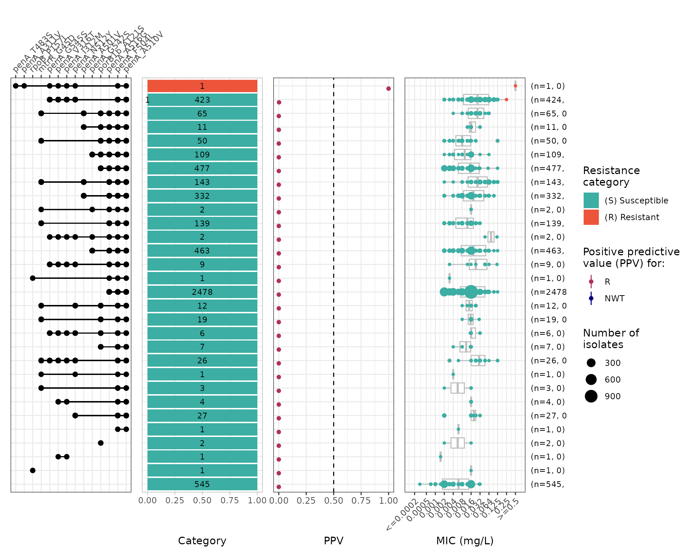
Due to the very limited number of isolates classified as resistant to cefixime or ceftriaxone in this dataset, logistic regression analyses are not feasible here.
Use case 2: Study of mosaic PBP2 mutations associated with decreased susceptibility and resistance to ceftriaxone
In this use case, we explore combinations of PBP2 mutations and their associated MIC ranges for mosaic penA variants, using a broader dataset that enriches for ceftriaxone-resistant and decreased-susceptibility isolates. The dataset combines AMRFinderPlus results from the following sources (total n = 2,101 genomes):
- Euro-GASP 2020 genomic survey by Golparian et
al. (2024).
- ENA PRJEB58139, n=1,932 genomes.
- Ceftriaxone-resistant gonococci from the United Kingdom, by Day
et al. (2022).
- ENA PRJEB57389, n=8 genomes.
- Ceftriaxone-resistant gonococci from England, by Fifer et al.
(2024).
- ENA PRJEB76977, n=19 genomes.
- Ceftriaxone-resistant gonoccci from Asia, by van der Veen et al.
2026.
- ENA PRJEB45627, PRJNA577446, PRJNA776899, PRJNA778600, PRJNA560592, PRJNA874857, PRJNA909328, PRJNA957547, PRJNA1161034, PRJNA1189294, n=113 genomes.
- World Health Organization (WHO) reference genomes, by Unemo et al.
(2024).
- ENA PRJNA1067895, n=29 genomes.
Import and format the data:
# Genotype file
ngono_cro_geno <- import_amrfp(ngono_cro_geno_raw, "Name")
#> Input file lacks the expected column: 'Type' (v4.0+) or 'Element type' (pre-v4), assuming all rows report AMR markers.
# Phenotype file
ngono_cro_pheno <- ngono_cro_pheno_raw %>%
pivot_longer(
cols = c(Ceftriaxone),
names_to = "antibiotic",
values_to = "mic"
)
ngono_cro_ast <- format_ast(
input = ngono_cro_pheno,
sample_col = "id",
species = "Neisseria gonorrhoeae",
ab_col = "antibiotic",
mic_col = "mic",
interpret_eucast = TRUE
)
#> Adding new micro-organism column 'spp_pheno' (class 'mo') with constant value Neisseria gonorrhoeae
#> Parsing column spp_pheno as micro-organism (class 'mo')
#> Parsing column antibiotic as antibiotic (class 'ab')
#> Renaming column antibiotic to standard name 'drug_agent'
#> Parsing column mic as class 'mic'
#> Could not find disk_col disk in input table
#> Could not find pheno_col ecoff in input table
#> Could not find pheno_col pheno_eucast in input table
#> Could not find pheno_col pheno_clsi in input table
#> Could not find pheno_col pheno_provided in input table
#> Could not find method_col method in input table
#> Could not find platform_col platform in input table
#> Could not find guideline_col guideline in input table
#> Could not find source_col source in input table
#> Interpreting all data as species: Neisseria gonorrhoeae
# Include empty rows for samples with phenotype but no genotype data
negative_cro <- ngono_cro_pheno_raw %>%
anti_join(ngono_cro_geno, by = c("id" = "Name")) %>%
pull(id)
ngono_cro_geno <- ngono_cro_geno %>% bind_rows(tibble(Name = negative_cro))Build the binary matrix and generate upset plots:
# Get binary matrix
cro_bin_2 <- get_binary_matrix(
geno_table = ngono_cro_geno,
pheno_table = ngono_cro_ast,
antibiotic = "Ceftriaxone",
drug_class_list = "Cephalosporins (3rd gen.)",
sir_col = "pheno_eucast",
keep_assay_values = TRUE,
keep_assay_values_from = "mic"
)
#> Defining NWT in binary matrix as I/R vs S, as no ECOFF column defined
# Calculate upset plots of MIC vs genotype marker combinations
cro_upset_2 <- amr_upset(
binary_matrix = cro_bin_2,
min_set_size = 1,
order = "value",
assay = "mic",
antibiotic = "Ceftriaxone",
species = "Neisseria gonorrhoeae"
)
#> MIC breakpoints determined using AMR package: S <= 0.125 and R > 0.125
#> MIC breakpoints determined using AMR package: S <= 0.125 and R > 0.125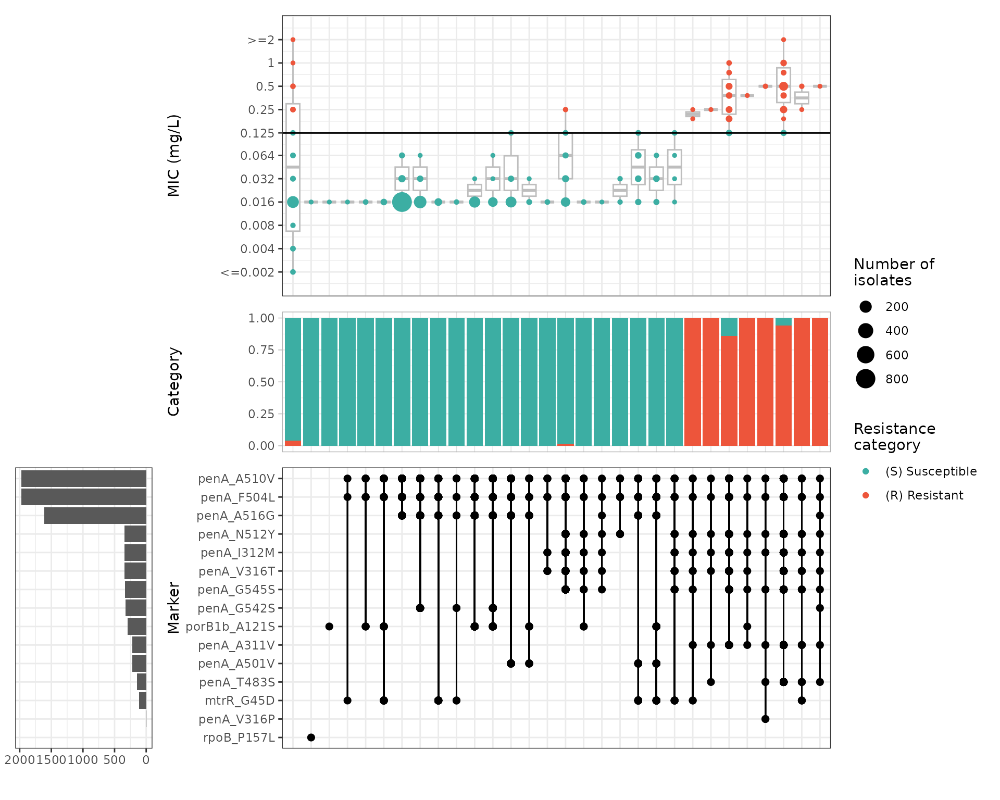
Calculate combination PPVs:
cro_ppv_2 <- ppv(
binary_matrix = cro_bin_2,
min_set_size = 1,
order = "ppv",
upset_grid = TRUE,
plot_assay = TRUE,
assay = "mic"
)
#> Scale for y is already present.
#> Adding another scale for y, which will replace the existing scale.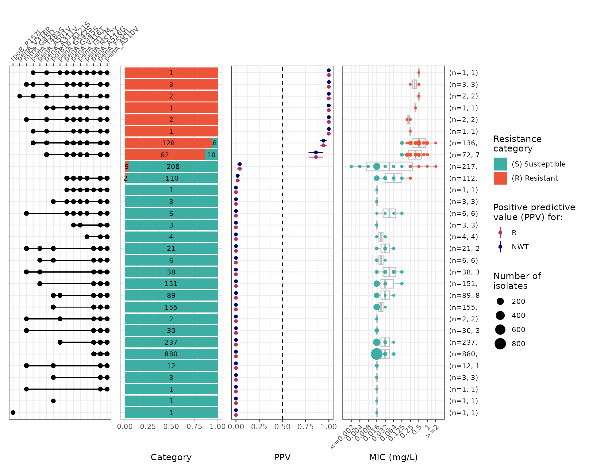
Run logistic regression to evaluate individual marker contributions:
cro_logist <- amr_logistic(
binary_matrix = cro_bin_2,
antibiotic = "Ceftriaxone",
sir_col = "pheno_eucast",
ecoff_col = "ecoff",
fit_glm = TRUE,
maf = 10,
single_plot = TRUE
)
#> ...Fitting logistic regression model to R using glm
#> Filtered data contains 2191 samples (211 => 1, 1980 => 0) and 13 variables.
#> Waiting for profiling to be done...
#> ...Fitting logistic regression model to NWT using glm
#> Filtered data contains 2191 samples (211 => 1, 1980 => 0) and 13 variables.
#> Waiting for profiling to be done...
#> Generating plots
#> Plotting 2 models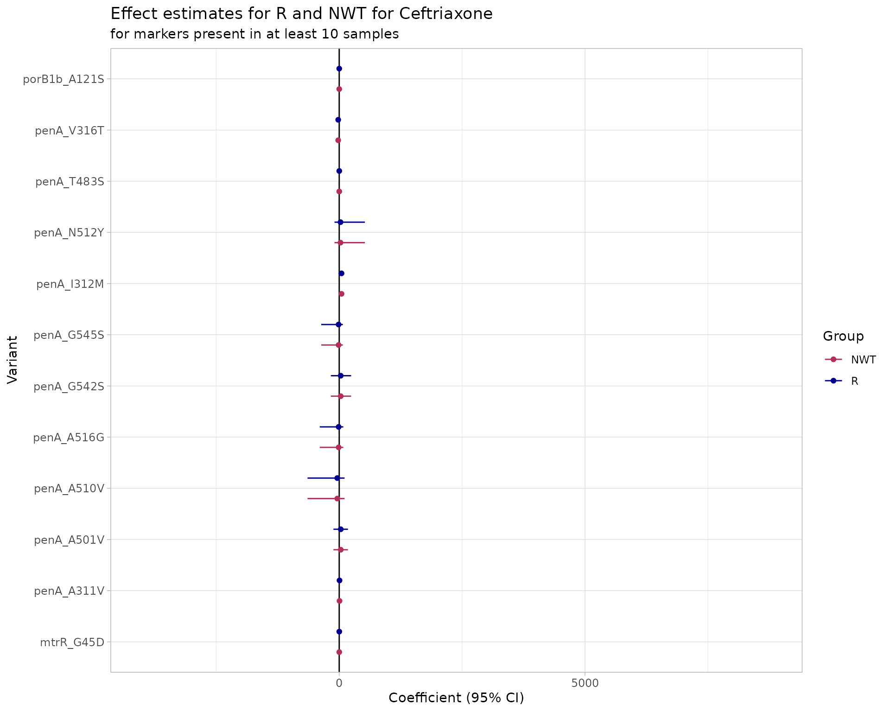
Results confirm that individual penA mutations do not independently increase cephalosporin MICs; rather, specific combinations of mutations are required. penA I312M has a very wide coefficient interval, likely reflecting their contribution to penA mosaics associated with resistance.
Use case 3: Investigation of tetracycline resistance and implications for STI prevention strategies
Doxy-PEP (doxycycline post-exposure prophylaxis) involves taking a single dose of doxycycline within 24–72 hours after a sexual risk event to prevent STIs. While evidence supports its short-term efficacy, a modelling study by Reichert et al. (2026) suggests that broad doxy-PEP implementation may select resistant lineages, potentially limiting its long-term effectiveness against gonorrhoea.
Here, we analyse 409 N. gonorrhoeae genomes from isolates collected in eastern Spain between 2021–2024 (Sánchez-Serrano et al., 2026, ENA PRJEB83795), with available tetracycline MIC data, to explore genetic determinants of tetracycline resistance in a local gonococcal population.
Import and format phenotype data:
ngono_tet_pheno <- ngono_tet_pheno_raw %>%
pivot_longer(
cols = c(Tetracycline),
names_to = "antibiotic",
values_to = "mic"
)
ngono_tet_ast <- format_ast(
input = ngono_tet_pheno,
sample_col = "id",
species = "Neisseria gonorrhoeae",
ab_col = "antibiotic",
mic_col = "mic",
interpret_eucast = TRUE,
interpret_ecoff = TRUE
)
#> Adding new micro-organism column 'spp_pheno' (class 'mo') with constant value Neisseria gonorrhoeae
#> Parsing column spp_pheno as micro-organism (class 'mo')
#> Parsing column antibiotic as antibiotic (class 'ab')
#> Renaming column antibiotic to standard name 'drug_agent'
#> Parsing column mic as class 'mic'
#> Could not find disk_col disk in input table
#> Could not find pheno_col ecoff in input table
#> Could not find pheno_col pheno_eucast in input table
#> Could not find pheno_col pheno_clsi in input table
#> Could not find pheno_col pheno_provided in input table
#> Could not find method_col method in input table
#> Could not find platform_col platform in input table
#> Could not find guideline_col guideline in input table
#> Could not find source_col source in input table
#> Interpreting all data as species: Neisseria gonorrhoeaeImport genotype data and add empty rows for samples with phenotype information but for which no genetic AMR determinants are identified by AMRfinderplus. For this example, there are 409 samples with MIC in the phenotype file but AMR determinants were only found for 402.
ngono_tet_geno <- import_amrfp(
input_table = ngono_tet_geno_raw,
sample_col = "Name"
)
negative_samples <- ngono_tet_ast %>%
anti_join(ngono_tet_geno, by = c("id" = "Name")) %>%
pull(id)
ngono_tet_geno <- ngono_tet_geno %>% bind_rows(tibble(Name = negative_samples))Build the binary matrix and generate upset plots:
tet_bin <- get_binary_matrix(
geno_table = ngono_tet_geno,
pheno_table = ngono_tet_ast,
antibiotic = "Tetracycline",
drug_class_list = "Tetracyclines",
ecoff_col = "ecoff",
sir_col = "pheno_eucast",
keep_assay_values = TRUE,
keep_assay_values_from = "mic"
)
#> Defining NWT in binary matrix using ecoff column provided: ecoff
tet_upset <- amr_upset(
binary_matrix = tet_bin,
assay = "mic",
min_set_size = 2,
order = "value",
bp_R = 0.5,
plot_set_size = TRUE,
print_set_size = TRUE,
print_category_counts = TRUE
)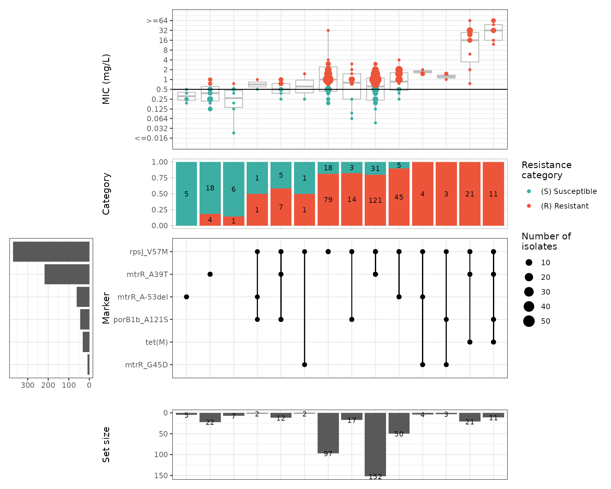
The upset plot shows that MIC increases are primarily explained by the chromosomal rpsJ V57M mutation and the tet(M) gene, which is carried on a conjugative plasmid.
Calculate prevalence of the two key resistance determinants in the studied population:
pop_size <- 409
ngono_tet_geno %>%
count(marker) %>%
filter(marker %in% c("rpsJ_V57M", "tet(M)")) %>%
mutate(percent = round(100 * n / pop_size, 1))
#> # A tibble: 2 × 3
#> marker n percent
#> <chr> <int> <dbl>
#> 1 rpsJ_V57M 373 91.2
#> 2 tet(M) 34 8.3Of the 409 isolates with tetracycline phenotypic data:
373 (91.2%) carry the rpsJ V57M chromosomal mutation.
34 (8.3%) carry the tet(M) gene on the conjugative plasmid.
Explore marker combinations in the upset summary:
tet_upset$summary %>%
arrange(desc(marker_count)) %>%
filter(grepl("rpsJ_V57M", marker_list))
#> # A tibble: 13 × 21
#> marker_list marker_count n combination_id R.n R.ppv R.ci_lower
#> <chr> <dbl> <int> <fct> <dbl> <dbl> <dbl>
#> 1 mtrR_A39T, rpsJ_V57… 4 11 1_1_1_1_0_0 11 1 1
#> 2 rpsJ_V57M, mtrR_A-5… 3 4 0_1_0_0_1_1 4 1 1
#> 3 rpsJ_V57M, porB1b_A… 3 3 0_1_0_1_0_1 3 1 1
#> 4 rpsJ_V57M, porB1b_A… 3 2 0_1_0_1_1_0 1 0.5 0
#> 5 rpsJ_V57M, tet(M), … 3 1 0_1_1_0_1_0 1 1 1
#> 6 mtrR_A39T, rpsJ_V57… 3 12 1_1_0_1_0_0 7 0.583 0.304
#> 7 mtrR_A39T, rpsJ_V57… 3 21 1_1_1_0_0_0 21 1 1
#> 8 rpsJ_V57M, mtrR_G45D 2 2 0_1_0_0_0_1 1 0.5 0
#> 9 rpsJ_V57M, mtrR_A-5… 2 50 0_1_0_0_1_0 45 0.9 0.817
#> 10 rpsJ_V57M, porB1b_A… 2 17 0_1_0_1_0_0 14 0.824 0.642
#> 11 rpsJ_V57M, tet(M) 2 1 0_1_1_0_0_0 1 1 1
#> 12 mtrR_A39T, rpsJ_V57M 2 152 1_1_0_0_0_0 121 0.796 0.732
#> 13 rpsJ_V57M 1 97 0_1_0_0_0_0 79 0.814 0.737
#> # ℹ 14 more variables: R.ci_upper <dbl>, R.denom <int>, NWT.n <dbl>,
#> # NWT.ppv <dbl>, NWT.ci_lower <dbl>, NWT.ci_upper <dbl>, NWT.denom <int>,
#> # median_excludeRangeValues <dbl>, q25_excludeRangeValues <dbl>,
#> # q75_excludeRangeValues <dbl>, n_excludeRangeValues <int>,
#> # median_ignoreRanges <dbl>, q25_ignoreRanges <dbl>, q75_ignoreRanges <dbl>
tet_upset$summary %>%
arrange(desc(marker_count)) %>%
filter(grepl("tet\\(M\\)", marker_list))
#> # A tibble: 4 × 21
#> marker_list marker_count n combination_id R.n R.ppv R.ci_lower
#> <chr> <dbl> <int> <fct> <dbl> <dbl> <dbl>
#> 1 mtrR_A39T, rpsJ_V57M… 4 11 1_1_1_1_0_0 11 1 1
#> 2 rpsJ_V57M, tet(M), m… 3 1 0_1_1_0_1_0 1 1 1
#> 3 mtrR_A39T, rpsJ_V57M… 3 21 1_1_1_0_0_0 21 1 1
#> 4 rpsJ_V57M, tet(M) 2 1 0_1_1_0_0_0 1 1 1
#> # ℹ 14 more variables: R.ci_upper <dbl>, R.denom <int>, NWT.n <dbl>,
#> # NWT.ppv <dbl>, NWT.ci_lower <dbl>, NWT.ci_upper <dbl>, NWT.denom <int>,
#> # median_excludeRangeValues <dbl>, q25_excludeRangeValues <dbl>,
#> # q75_excludeRangeValues <dbl>, n_excludeRangeValues <int>,
#> # median_ignoreRanges <dbl>, q25_ignoreRanges <dbl>, q75_ignoreRanges <dbl>Calculate PPVs for marker combinations:
tet_ppv <- ppv(
binary_matrix = tet_bin,
min_set_size = 1,
order = "ppv",
upset_grid = TRUE,
plot_assay = TRUE,
assay = "mic"
)
#> Scale for y is already present.
#> Adding another scale for y, which will replace the existing scale.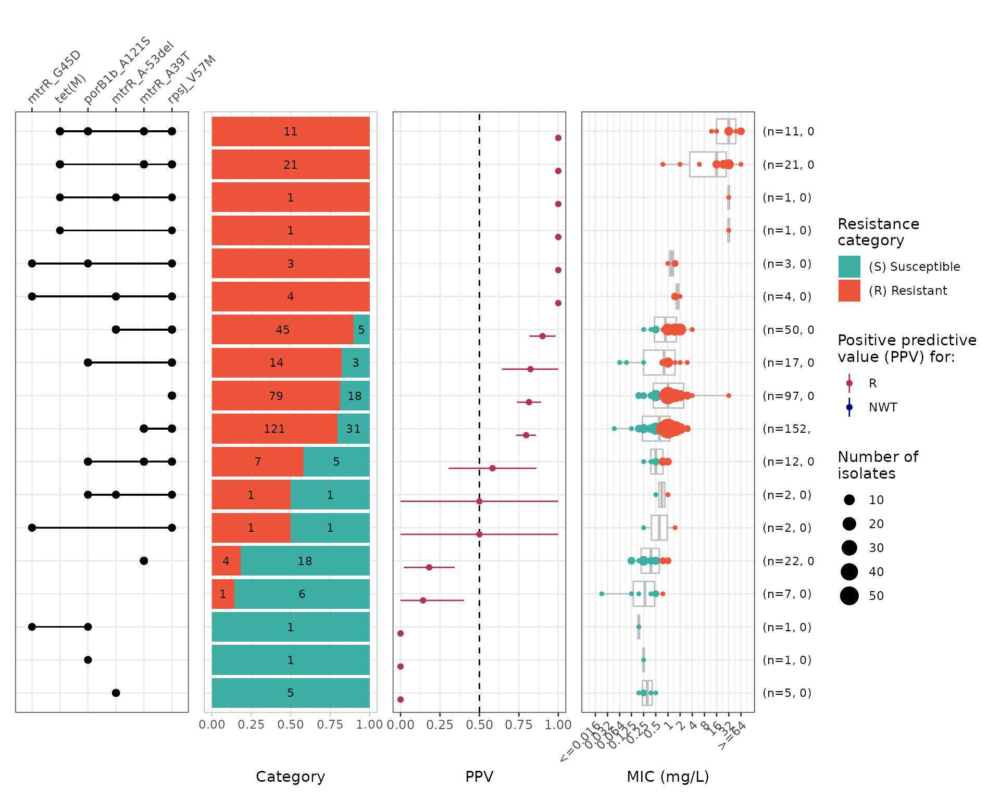
Run logistic regression to confirm the independent contributions of rpsJ V57M and tet(M):
tet_logist <- amr_logistic(
binary_matrix = tet_bin,
antibiotic = "Tetracycline",
drug_class_list = "Tetracyclines",
sir_col = "pheno_eucast",
ecoff_col = "ecoff",
maf = 10,
single_plot = TRUE
)
#> ...Fitting logistic regression model to R using logistf
#> Filtered data contains 409 samples (314 => 1, 95 => 0) and 6 variables.
#> ...Fitting logistic regression model to NWT using logistf
#> Generating plots
#> Plotting R model only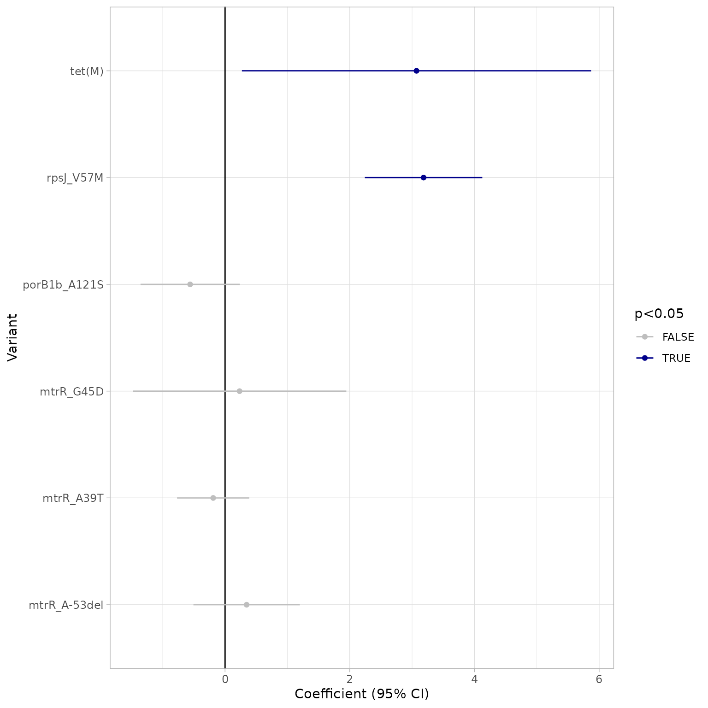
As there is no ECOFF defined for tetracycline in N.
gonorrhoeae, we use only clinical breakpoints
(truth = "R") in the concordance analysis:
tet_concordance <- concordance(
binary_matrix = tet_bin,
ppv_results = tet_ppv,
prediction_rule = "logistic",
logreg_results = tet_logist,
truth = "R"
)
tet_concordance
#> AMR Genotype-Phenotype Concordance
#> Prediction rule: logistic
#>
#> --- Outcome: R ---
#> Samples: 409 | Markers: 6
#> Markers used: mtrR_A39T, rpsJ_V57M, tet(M), porB1b_A121S, mtrR_A-53del, mtrR_G45D
#>
#> Confusion Matrix:
#> Truth
#> Prediction 1 0
#> 1 309 64
#> 0 5 31
#>
#> Metrics:
#> Sensitivity : 0.9841
#> Specificity : 0.3263
#> PPV : 0.8284
#> NPV : 0.8611
#> Accuracy : 0.8313
#> Kappa : 0.3962
#> F-measure : 0.8996
#> VME : 0.0159
#> ME : 0.6737The current marker set achieves 98.72% sensitivity and 82.84% PPV, but only 28.09 % specificity. This is reflected in a high major error rate (ME = 71.91%), meaning many susceptible isolates are predicted as resistant — a consequence of the very high prevalence of rpsJ V57M in isolates that have elevated MICs but remain below the clinical breakpoint.
Visualise the predictions on the MIC distribution:
ngono_tet_pred <- ngono_tet_ast %>%
left_join(tet_concordance$data[, c("id", "R_pred")],
by = "id"
)
assay_by_var(
pheno_table = ngono_tet_pred,
antibiotic = "Tetracycline",
measure = "mic",
colour_by = "R_pred",
species = "Neisseria gonorrhoeae",
bar_cols = c("#3CAEA3", "#ED553B"),
colour_legend_label = "R prediction"
)
#> MIC breakpoints determined using AMR package: S <= 0.5 and R > 0.5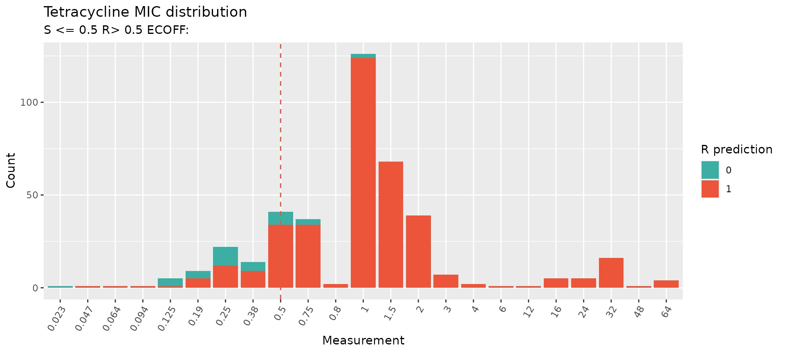
The high prevalence of rpsJ V57M (>90% of the population) combined with a significant prevalence of the plasmid-borne tet(M) gene — which can be readily acquired by other circulating lineages through conjugation — means that doxy-PEP is likely to select for these pre-existing resistant lineages. Together, these findings support the conclusion that doxy-PEP is unlikely to provide a durable long-term solution for reducing the burden of gonorrhoea infections.